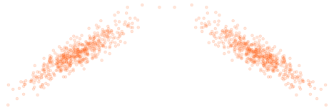
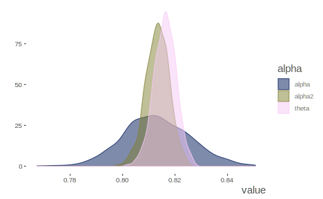

Table of Contents
Goals/Abstract
To examine reliability from different perspectives, and the uncertainty in the measurement of it.
Audience
Applied practitioners of statistics in fields where the reporting of reliability of measurement is commonplace (e.g. psychology, education, biomedical sciences). Supplemental material may go deeper and be of interest to methodologists.
The Meaning of Reliability
What we talk about when we talk about reliability
When used in everyday discourse, no one really wonders what we mean when we say something is reliable. If you are talking about a car and you say it’s reliable, it means it won’t break down on you. If we talk about a person being reliable, it means we can depend on them to provide consistent behavior, e.g. regarding a specific task. Reliable electric service means one can keep the lights on all day. This everyday notion of reliability is closely related to the notion of dependability as well. We can depend on the person, car, or whatever, to do what we expect. Even though we may agree on this concept of reliability, pause should be taken. A reliable car from the 1970s would not meet acceptable standards for reliability these days. Your assessment and standard of reliablity may be wholly different if talking about a brother or sister. Thus, some fuzziness is inherent even with the everyday notion of reliability.
While we can talk about reliability from an everyday standpoint, the concept has been carried over to the realm of scientific analysis of data as well. And while the concept may be applied, it must of course become more precise, as scientific endeavor dictates. It may surprise some that reliability has been studied scientifically for over a century. With that knowledge however, it should not be too surprising that numerous statistical techniques have been advanced over that time, and the varieties will often align with different notions of reliability.
Even when positing a specific statistic for reliability, our investigation should not end there. As with the everyday notion of reliablity, there is uncertainty in the scientific measurement of it, and we should have some grasp of the nature of that uncertainty, else we risk becoming overly confident in our understanding of a measure. Thus what holds for other statistical measures - means, regression coefficients, and so on - will apply to any measurment of reliability as well.
In what follows we seek to trace out a few of the definitions of reliability associated with some of the more common statistical measures of it. Classical test theory will lay the foundation, after which we will explore an understanding of reliability from simple correlations, to the concept of consistency, and finally toward thinking about latent constructs and measurement error more deeply. Demonstrations of each notion of reliability will then be provided, not focused on merely producing a statistic, but establishing the uncertainty surrounding it, and understanding it with that context. General comparisons and contrasts about the different approaches will be made, and suggestions about practical ways to proceed offered. And finally, much more advance and technical exploration will be undertaken in the supplemental addendum to this document.
Statistical Reliability
Classical Test Theory
The foundation for understanding reliability from a statistical standpoint resides with Classical Test Theory. The title may be offputting at first blush, but it is conceptually straightforward. Even then, as McDonald McDonald (1999) put it-
The mathematics of the theory is extremely simple. The application of the theory can be problematic.
So what are the mathematics? Simple arithmetic.
\[\mathrm{Observed\ Score = True\ Score + Error}\]
But what does this mean? Any measurement we take of something provides us an observed score. For example, we step on a scale and note our weight. A perfect measurement would provide the right score every time, and thus our observed score would equal the true score. But no measurement is perfect1, i.e. everything is measured with some amount of error, however small. The error can be random, variability caused by unknown sources, but which will not affect our average account of a thing. Our weight from the scale goes up and down but on average it is correct. Error can also be systematic, where the measurement is always off by some amount, and our observed score is always too high or too low. In this scenario, our scale may always be displaying a greater weight than it should. Unfortunately, it is very difficult, if not impossible, to distinguish the two in many typical circumstances.
So conceptually we can simply think of an observation of any measure being composed of whatever the true score would be plus some associated error. The key idea is that the assessment of the error will allow us to understand how reliable our measure is.
Correlation
Let’s start with correlation. If two things are correlated, they move in tandem, either they go up and down together, or as one goes up the other goes down and vice versa. At the very least of our understanding of reliability is that similar measurements of the same thing should be correlated. But this correlation might be assessed by different means.

Test-retest
Let’s say we now take the weights of one hundred people. Then we do so again six months later. We should expect that heavier people at the first measurement will likely be heavier the second time as well. Same for lighter people.
That correlation of the two measurments can provide us our first attempt at measuring reliability. Typically referred to as test-retest reliability, this notion gives us some understanding of the stability or consistency of measurement across time. While this is useful and straightforward, many situations will not allow for multiple testing occasions, so we’ll need other alternatives.
Parallel Forms
One method instructors used to use to thwart cheating was to provide half of the class one version of the test, and the other half a different version, that covered the same content, but which had slightly different questions/answers. When passed out randomly, students couldn’t peek at their neighbor’s test and gain any advantage. In terms of classical test theory, if we gave these parallel/alternate forms to each student, the true score for any student would be the same, regardless of what form they took, and any observed score differences would be error.
In the more common applied research setting, the question then is how do we know if we are dealing with parallel tests? Unless they are derived as such, we cannot say for certain, and this usually only happens in educational settings, such as with the SAT or GRE. Beyond that it is probably rare that resources allow for parallel forms of measurement, or if they do, enough forms to test the assumption of parallelism.
Split-half
A notion of reliability not too far removed from the previous is that of split-half reliability. If our measure is made up of multiple observations, say, survey questions, scale items, or whatever, we can just take a random half of them, get a total score for each individual, and do the same with the other half. Now each person has two scores, and their correlation gives us a glimpse of the reliability of the measure. Consider it a poor man’s alternate forms approach.
Consistency
Split-half reliability allows us to estimate reliability with only one test. This is important, as many times we can only measure something in one setting, even if multiple times within that setting. For example, there may be only one qualifying exam, one survey administered, and so forth. As such we need some way to assess the internal structure of the measure. Some of the most commonly used statistics, such as Cronbach’s \(\alpha\), offer such a measure. For that, it will still be based on simple correlations, but as we don’t have multiple tests, the correlations will regard the items or instances of the measure we have from the setting observations occur. The average correlation across all items will serve as the basis for an assessment of reliability, but the number of items will have a say as well.
Measurement of a Construct
Finally, we can think about reliability in terms of how well the tests measure the construct. Some would call this validity, though the distinction is muddier in practice. The observed measurements we have are imperfect measurements of the thing they are purported to measure. Estimation of that imperfection is the whole of reliability analysis. We can get at this notion more intently with tools from factor analysis, and can begin to think about reliability in terms of how much of the latent constuct is actually in the observed measures.
Demonstrations
Preliminaries
Before diving into demonstration we will first describe the data and analytical approach. Both observed and simulated data will be presented, followed by discussion of the analysis.
Data Description
Observed Data
The Big Five Inventory is a popular personality scale use in a wide variety of applications. For our example, we will have at our disposal 25 items corresponding to the five subscales- Agreeableness, Openness, Extroversion, Conscientiousness, and Neuroticism. However, we will concern ourselves with the Neurtocism subscale specifically. This particular data is available in the R package psych, and regards 2800 subjects as part of the Synthetic Aperture Personality Assessment (SAPA) web based personality assessment project. The items are six-point scales ranging from 1 Very Inaccurate to six 6 Very Accurate, and are statements that may reflect the person’s assessment of themselves. The neuroticism items in particular are:
- N1: Get angry easily.
- N2: Get irritated easily.
- N3: Have frequent mood swings.
- N4: Often feel blue.
- N5: Panic easily.
More details can be found with the data object’s (bfi) associated helpfile. The following shows how the data may be obtained.
library(tidyverse)
library(psych)
neuroticism = select(bfi, N1:N5)Basic descriptives and correlations are shown next. While there is some missing data, some reliability statistics will be based on pairwise correlations, and thus use all available information. Some of the item correlations are not that strong, but this is a realistic situation for many data in social and related sciences.
| Variable | N | Mean | SD | Median | Missing |
|---|---|---|---|---|---|
| N1 | 2778 | 2.93 | 1.57 | 3 | 22 |
| N2 | 2779 | 3.51 | 1.53 | 4 | 21 |
| N3 | 2789 | 3.22 | 1.60 | 3 | 11 |
| N4 | 2764 | 3.19 | 1.57 | 3 | 36 |
| N5 | 2771 | 2.97 | 1.62 | 3 | 29 |
| N1 | N2 | N3 | N4 | N5 | |
|---|---|---|---|---|---|
| N1 | 1.00 | 0.71 | 0.56 | 0.40 | 0.38 |
| N2 | 0.71 | 1.00 | 0.55 | 0.39 | 0.35 |
| N3 | 0.56 | 0.55 | 1.00 | 0.52 | 0.43 |
| N4 | 0.40 | 0.39 | 0.52 | 1.00 | 0.40 |
| N5 | 0.38 | 0.35 | 0.43 | 0.40 | 1.00 |
Simulated/Ideal data
One of our investigations into reliability will involve what is commonly referred to as factor analysis. Along with the observed data just described, the psych package additionally provides an easy means to simulate data with known factor structure. We can specify the number of factors, loadings, number of items among other things. Doing so will allow us to know what to expect from the factor analysis portion of the exploration, and explore uni- vs. multidimensional structure if desired. As a starting point, we will simulate a congeneric data set, one in which the factor structure regards just one latent variable underlying the items. We will have six items for this data, with moderate to strong loadings between .4 and .7.
set.seed(123)
N = 1000
n_items = 6
loadings_congeneric = c(.4, .4, .5, .5, .6, .7)
cor_congeneric = sim.congeneric(loadings_congeneric, N = N)
data_congeneric =
mvtnorm::rmvnorm(n = N,
mean = rep(0, n_items),
sigma = cor_congeneric) %>%
as_data_frame() %>%
rename_all(str_replace, pattern = 'V', replacement = 'item_')| item_1 | item_2 | item_3 | item_4 | item_5 | item_6 |
|---|---|---|---|---|---|
| -1.158 | 0.592 | 2.019 | 0.797 | 1.869 | 0.329 |
| -0.038 | 1.193 | 0.635 | 0.845 | 0.108 | 0.213 |
| 0.398 | 0.211 | 0.828 | -0.138 | -0.534 | 1.333 |
| -0.712 | 0.194 | -1.546 | -0.551 | 1.944 | 0.084 |
| 0.839 | 0.521 | -1.203 | 0.798 | -0.822 | 0.606 |
| -1.098 | -0.047 | 0.429 | -0.356 | -0.116 | 0.364 |
Analytical Approach
The analysis of the data will be conducted on both the observed and simulated data sets. We will show three conceptual estimates of reliability, but, in addition, we will focus on the estimated uncertainty in those estimates. Far too often reliability statistics are reported without any thought of the underlying models, or that there is possibly notable uncertainty in the estimate. The three conceptual estimates include the most popular estimate of reliability, Cronbach’s \(\alpha\), followed by two model-based approaches - generalizability theory and latent variable/factor analysis.
Cronbach’s \(\alpha\)
Cronbach’s \(\alpha\) is one of the most popular measures of reliability. Sometimes considered an measure of internal consistency, it is a function of the average covariance/correlation among the observations/items, the total variance of the test, as well as the number of items. It is also interpreted as the mean of all possible spit-half reliabilities. While it is descriptive in nature, it assumes a unidimensional factor structure model representation, or in other words, that all the items correspond to the same underlying construct2. The standardized formula only requires the two values of the number of items \(k\) and average inter-item correlation \(\bar{r}\).
\[\alpha = \frac{k\bar{r}}{1+(k-1)\bar{r}}\]
All else being equal, simply increasing the number of observations/items will give you a higher reliability. In some contexts this may make sense, as the goal is to use an average score, but in others it may not.
The following shows the results from the psych package. In addition to both raw and standardized \(\alpha\) measures, it also offers Guttman’s lambda 6, a ‘signal-to-noise’ ratio and tohre info. Shown are the alphas, absolute standard error, and average/median inter-item correlation.
| Raw | Standardized | Avg. Inter-item cor | Median r | ASE | |
|---|---|---|---|---|---|
| 0.81 | 0.81 | 0.47 | 0.41 | 0.01 |
These statistics show how \(\alpha\) changes when the item is dropped. We can see that items N1 through N3 are more useful measures, as dropping them would result in a significant drop in \(\alpha\).
| Raw | Standardized | Avg. Inter-item cor | Median r | |
|---|---|---|---|---|
| N1 | 0.76 | 0.76 | 0.44 | 0.41 |
| N2 | 0.76 | 0.76 | 0.45 | 0.41 |
| N3 | 0.76 | 0.76 | 0.44 | 0.39 |
| N4 | 0.80 | 0.80 | 0.50 | 0.49 |
| N5 | 0.81 | 0.81 | 0.52 | 0.53 |
The Uncertainty of \(\alpha\)
One issue with Cronbach’s \(\alpha\) is that the uncertainty in the estimate is almost never reported, even though it has been known for decades how to derive a confidence interval for it, and tools are readily available for producing it. The package does this in two ways. One uses an approach noted in Feldt, Woodruff, and Salih (1987), and which assumes fixed, rather than random, items and subjects. The other method is via the bootstrap, calculating \(\alpha\) for \(R\) number of bootstrap resamples of the data. Both results are shown below, with the bootstrapped value based on 1000 iterations.
| LL | alpha | UL | |
|---|---|---|---|
| alpha raw | 0.8030 | 0.814 | 0.8250 |
| alpha boot | 0.8024 | 0.814 | 0.8254 |
We can see that the bootstrapped interval is essentially the same, but in either case we can see that our estimate of \(\alpha\) would best be summarized as some value between .80 and .83.
A Bayesian Approach
An alternative approach to estimating the uncertainty in \(\alpha\) would be a Bayesian estimate. We could estimate the value by first estimating the correlation matrix underlying the assumed multivariate normal distribution of the observations/items. Thus the Bayesian \(\alpha\) would be based on the posterior predictive distribution given the estimate of the correlation matrix Padilla and Zhang (2011). Alternatively, we could use a normal approximation for the distribution of the \(\alpha\) itself, based on the estimated correlation matrix (2000). Yet another approach would be based on a mixed model, calculating an intra-class correlation coefficent for a set number of items, as in Generalizability theory. We will save that for the following section. More detail can be found in the supplemental materials.
| LL | alpha | UL | |
|---|---|---|---|
| Normal approx. | 0.788 | 0.812 | 0.837 |
| Post. Pred | 0.804 | 0.813 | 0.822 |
| Post. Pred. Non-normal | 0.808 | 0.817 | 0.825 |
We can also view these estimates directly. The normal approximation is wider than the other two.

Here are all the estimates of uncertainty calculated. For this amount of data it is not surprising that they are mostly in agreement, though the normal approximation may be a little wider.
| LL | alpha | UL | |
|---|---|---|---|
| alpha raw | 0.80 | 0.81 | 0.82 |
| alpha boot | 0.80 | 0.81 | 0.83 |
| Normal approx. | 0.79 | 0.81 | 0.84 |
| Post. Pred | 0.80 | 0.81 | 0.82 |
| Post. Pred. Non-normal | 0.81 | 0.82 | 0.82 |

Simulated Data
The simulated data allows for us to have a more controlled exploration. We know the items are multivariate normal and unidimensional, so this is where \(\alpha\) shines as a measure of reliability. We’ll skip the formality and cut right to the chase. Here are all the previous estimates for this data set. The \(\alpha\) is
| LL | alpha | UL | |
|---|---|---|---|
| alpha raw | 0.69 | 0.72 | 0.75 |
| alpha boot | 0.69 | 0.72 | 0.74 |
| Normal approx. | 0.67 | 0.71 | 0.76 |
| Post. Pred | 0.69 | 0.72 | 0.74 |
| Post. Pred. Non-normal | 0.71 | 0.73 | 0.76 |

Generalizability theory
\[\rho = \frac{\sigma_g^2}{\sigma_g^2 + \sigma^2}\]
The Uncertainty of Generalizability
Simulated Data
Factor Analysis
omega, ave
The Uncertainty of Factor Loadings
Conclusion and Summary
Appendix
Acknowledgments
Yadda yadda
Author Contributions
Yadda yadda
Feldt, Leonard S., David J. Woodruff, and Fathi A. Salih. 1987. “Statistical Inference for Coefficient Alpha.” Applied Psychological Measurement 11 (1): 93–103. https://doi.org/10.1177/014662168701100107.
McDonald, Roderick. 1999. Test Theory. Psychology Press. https://books.google.com/books/about/Test_Theory.html?id=_feqA2RdyOoC.
Padilla, Miguel, and Guili Zhang. 2011. “Estimating Internal Consistency Using Bayesian Methods.” Journal of Modern Applied Statistical Methods 10 (1). https://doi.org/10.22237/jmasm/1304223840.
Revelle, William. n.d. An Introduction to Psychometric Theory with Applications in R. Accessed December 4, 2018. http://www.personality-project.org/r/book/.
Zyl, J. M. van, H. Neudecker, and D. G. Nel. 2000. “On the Distribution of the Maximum Likelihood Estimator of Cronbach’s Alpha.” Psychometrika 65 (3): 271–80. https://doi.org/10.1007/BF02296146.